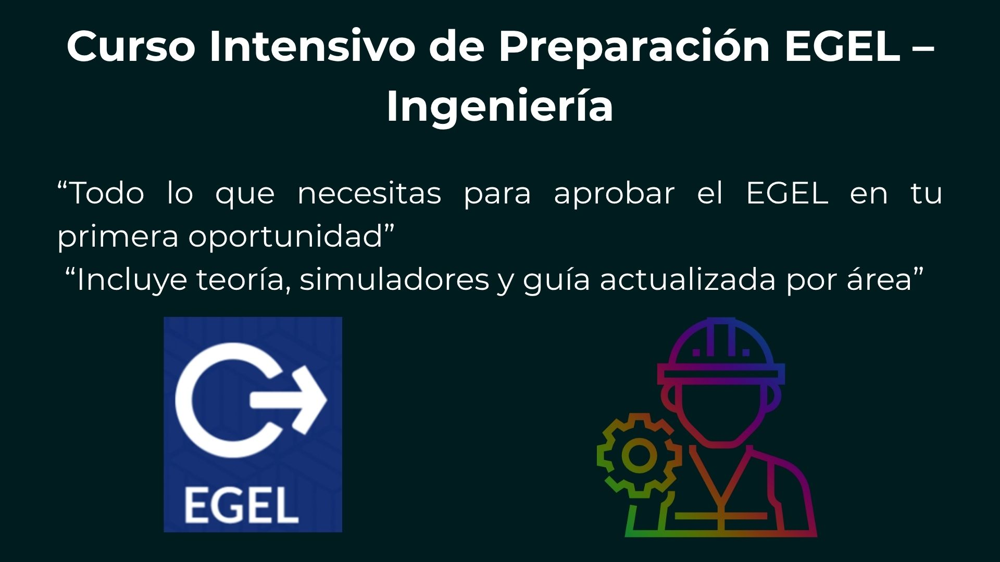

📘 Objetivo del Curso
Este curso intensivo está diseñado para prepararte de forma integral para aprobar el Examen EGEL de IngenierÁa en tu primera oportunidad. A través de clases dinámicas, teorÁa enfocada, simuladores tipo CENEVAL y una guÁa por áreas clave, fortalecerás tu dominio de los temas que evalúa el EGEL, con enfoque en competencias reales y resolución de problemas.
📚 Contenido del Curso
- 🔹 Estructura y dinámica del Examen EGEL
- 🔹 Estrategias para resolver reactivos tipo CENEVAL
- 🔹 Áreas técnicas:
- ⚙️ Control Analógico y Digital
- 🔩 Mecánica, FÁsica y EstadÁstica
- 💡 Electrónica, CAD, PLC, CNC
- 🧠Programación y Matemáticas Financieras
- 🔹 Áreas transversales:
- 📊 Administración de Proyectos
- 📖 Redacción Indirecta y Comprensión Lectora
- 🔹 Ejercicios prácticos y resolución de reactivos reales
- 🔹 Simulacros cronometrados con retroalimentación
ⳠDuración del Curso
20 horas totales, distribuidas en 10 sesiones de 2 horas. Incluye material digital, guÁas por área y acceso a simuladores.
✅ Requisitos Previos
- 💻 Computadora con acceso a internet y lector PDF
- 📘 Conocimientos generales en ingenierÁa (últimos semestres o egresado)
- ✅ Motivación y compromiso para estudiar y practicar